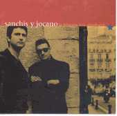

|  |
|
ahora alguien dirá "baja el
centro de la ciudad"
y diviértete, hay tanto idiota suelto
que partir la cara es algo habitual
seguro que nunca lo entenderías
espero a ella
y no sé si es bueno o malo
oigo los taxis y digo "ei tío,
estás jodido!"
jodido de verdad, a ver si acabas tus cervezas
y dejas de llorar, y esperas al nuevo dia
otra vez a trabajar duro
espero a ella
y no sé si es bueno o malo
y cuando la soledad te agarra la bragueta
y dices "que solo estoy!"
sólo te queda un espejo roto
la misma cara de gilipollas
espero a ella
y no sé si es bueno o malo.